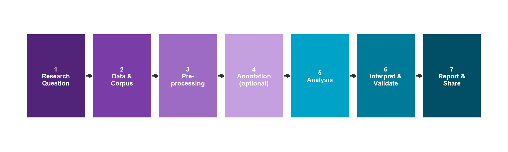

Introduction to Computational Text Analytics
Research Bazaar Brisbane 2026
LADAL · Language Technology and Data Analysis Laboratory · University of Queensland
Do you have more text than you know what to do with?
Are you doing the same thing over and over and feeling like you’re not using your time efficiently?
Are you worried about missing the forest for the trees?
This workshop is for you.
Today’s Plan
Part 1 · 45 min
Concepts & Foundations
- What is computational text analysis?
- Why does it matter?
- The pipeline: from raw text to insight
- Core concepts: concordancing, collocations, keywords
- LADAL: your long-term resource
Part 2 · 60 min
Hands-on Practice
- Track A (R users): Live demo + guided notebook with COOEE corpus
- Track B (no R): LADAL browser tools + guided exercises
All materials: github.com/MartinSchweinberger/intro-ta-resbaz
Part 1
What Is Computational Text Analysis, and Why Does It Matter?
Text Is Everywhere — And Growing
Research today drowns in text:
- Interview transcripts
- Open-ended survey responses
- Historical documents
- Government reports
- Social media data
- News archives
- Academic papers
The volume of text has outpaced our ability to read it.
Manual reading:
~250 words/min
50,000 newspaper articles:
~3,333 hours of reading
Computational analysis:
~secondsComputational Text Analysis = using computers to find patterns, relationships, and insights in large collections of text.
What Text Analysis Is — And Is Not
✅ What it is
- A set of tools to assist human interpretation
- A way to scale analysis across many texts
- A method to find patterns systematically and reproducibly
- Complementary to close reading
❌ What it is not
- A replacement for reading or interpretation
- Always better than manual analysis
- Free of researcher decisions
- Objective or neutral
Computational methods produce patterns. Researchers produce meaning.
Four Related Fields
| Field | Primary Home | Key Goal |
|---|---|---|
| Text Analysis (TA) | Humanities, Social Science | Understand texts & phenomena |
| Corpus Linguistics (CL) | Linguistics | Understand language use empirically |
| Natural Language Processing (NLP) | Computer Science / AI | Build language technology |
| Text Mining (TM) | Data Science / Industry | Extract info at scale, minimal human input |
Today we’re doing TA and CL — using computational tools to answer research questions, with human interpretation of results at every step.
Why Now? Four Structural Changes
- Digitisation of archives — millions of historical documents, letters, newspapers now machine-readable
- Born-digital text — social media, emails, forums already in computational form
- Better methods — NLP, machine learning, statistical tools now mature and accessible
- Lower barriers — R, Python, and tools like LADAL mean researchers don’t need computer science degrees
The COOEE corpus (letters of early immigrants to Australia, 1788–1900) is a perfect example of digitised historical archive — now available for computational analysis.
The Text Analysis Pipeline
From raw text to insight in 7 stages
The 7-Stage Pipeline

Today’s workshop focuses on stages 3 & 5: pre-processing and three core analysis methods.
The rest of the pipeline is covered in depth at ladal.edu.au/tutorials
Stage 1: Start With a Question
Good TA research questions come in several types:
| Type | Example |
|---|---|
| Descriptive | What topics are most common in these letters? |
| Comparative | How does language in early vs. late COOEE letters differ? |
| Diachronic | How has use of word X changed over time? |
| Relational | Which words tend to appear together? |
The single biggest mistake in text analysis: running methods first and asking what they mean second. Methods serve questions — not the other way around.
Stage 2: The Corpus
A corpus is not just “a bunch of texts.” It is a principled, documented collection designed to address a specific question.
Design decisions: - Representativeness
- Balance across groups/periods
- Size (bigger ≠ always better)
- Metadata (who wrote it, when, where)
- Rights and licensing
COOEE corpus: - 319 letters, 1788–1900 - Written by early immigrants to Australia
- Metadata: author, gender, origin, year, place
- Perfect for historical language analysis
- Open access via LADAL
Stage 3: Pre-processing
Raw text is messy. Before analysis, we clean and normalise it.
Common steps:
- Encoding normalisation (UTF-8)
- Tokenisation (splitting into words)
- Lowercasing
- Removing noise (XML tags, URLs, numbers)
- Stopword removal (for frequency analyses)
- Lemmatisation / stemming
Pre-processing decisions affect results. Removing stopwords before a topic model gives very different topics than keeping them.
There are no universally correct choices — the right pre-processing depends on the question.
Stage 5: Three Core Methods
We’ll use all three in today’s workshop.
Concordancing → Collocations → Keywords
Method 1: Concordancing
What it is: Finding every instance of a word or phrase in a corpus, displayed with surrounding context (KWIC = Keyword In Context).
***KWIC: "land"***
...the ship arrived at the ... LAND ... after many weeks at sea...
...settlers claimed the rich ... LAND ... near the river...
...he described the new ... LAND ... as fertile but harsh...
...grants of ... LAND ... were promised to free settlers...What it tells you: How a word is actually used in context — what precedes and follows it, how its meaning varies across the corpus.
LADAL tool: WordFinder (Shiny) · Concordance Explorer (Jupyter)
Method 2: Collocation Analysis
What it is: Finding which words appear together more often than chance — statistically significant co-occurrence.
Not just “which words appear near X” but “which words appear near X more than you’d expect given how common both words are.”
Key measures: - Mutual Information (MI) — favours rare but strongly associated pairs - Log-likelihood (LL) — favours frequent, reliable associations - t-score — balances frequency and association
Example: collocates of “land” in COOEE
| Word | MI | Meaning |
|---|---|---|
| grant | high | land grants |
| fertile | high | land quality |
| free | med | free land |
Method 3: Keyword Analysis
What it is: Comparing two corpora to find words that are statistically distinctive in one compared to the other (keyness).
Logic: A word is “key” if it appears much more (or less) often in your target corpus than you’d expect based on a reference corpus.
Today: COOEE letters vs. BROWN corpus (standard American English)
Key measures: - G² (log-likelihood ratio) — most robust
- Chi-squared
- Log ratio — most interpretable
Keywords reveal what makes a corpus distinctive — not just what is frequent in it. Frequent words are often just common English words. Distinctive words are what’s characteristic of your specific text collection.
Core Terminology: Quick Reference
| Term | Definition |
|---|---|
| Token | Individual word instance (counts repetitions: the = 3 tokens if it appears 3×) |
| Type | Unique word form (counts without repetition: the = 1 type) |
| Lemma | Base/dictionary form: running, ran, runs → RUN |
| Type-Token Ratio | Types ÷ Tokens — a measure of vocabulary diversity |
| Document-Term Matrix | Table: rows = documents, columns = words, cells = counts |
| Stopwords | High-frequency function words (the, and, of) often removed before frequency analysis |
Types vs. Tokens vs. Lemmas: Illustrated
Sentence: “The settlers cleared the land and built on the land.”
Tokens (10)
The · settlers · cleared
the · land · and · built
on · the · land
Types (8)
The · settlers · cleared
land · and · built
on (the appears 3× = 1 type)
Lemmas
the → THE
settlers → SETTLER
cleared → CLEAR
built → BUILD
land → LAND
Type-Token Ratio = 8 ÷ 10 = 0.80 — relatively high diversity for a short sentence.
LADAL: Your Long-Term Resource
- 60+ free tutorials: Data Science Basics → R Basics → Text Analytics
- Browser tools: no installation required
- Quarto notebooks: run, modify, extend
- From beginner to transformer models (BERT, LLMs)
- Open access, citable, DOI-registered
Today’s methods each have a dedicated deep-dive tutorial:
Concordancing · Collocations · Keywords
LADAL Tools (no R needed):
| Tool | What it does |
|---|---|
| WordFinder | KWIC concordancing |
| CollocationCalculator | MI, LL, t-score |
| KeywordExtractor | Keyness vs. reference |
| SentimentExplorer | Polarity + emotions |
| TextCleaner | Remove noise/tags |
| TopicDetector | LDA topic models |
Questions before we start?
Part 2 begins in a moment.
Track A (R users): open RStudio
Track B (no R): open a browser
Materials: github.com/MartinSchweinberger/intro-ta-resbaz
Part 2 Overview
Track A: R Users
- Fork/clone the repo (5 min)
- Open
02_r_notebook.qmd - Live demo: project setup + mini analysis
- Work through the notebook tasks
- Pointer to LADAL tutorials for going further
Track B: No R
- Download the handout or open
03_tools_notebook.qmd - Navigate to ladal.edu.au/tools.html
- Work through guided exercises with provided data
- Pointer to LADAL tools for going further
Both tracks use the same COOEE corpus data. The questions you answer will be the same — only the tools differ.

ResBaz Brisbane 2026 · ladal.edu.au